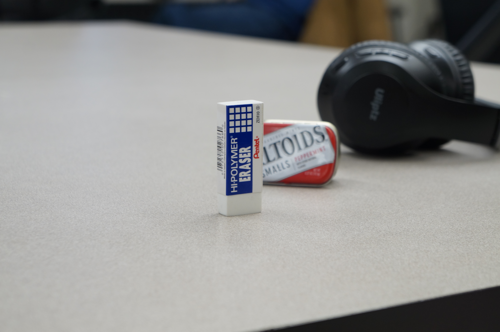
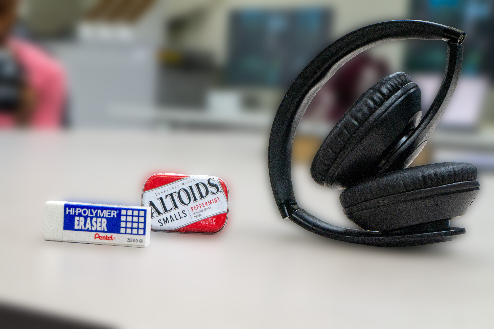
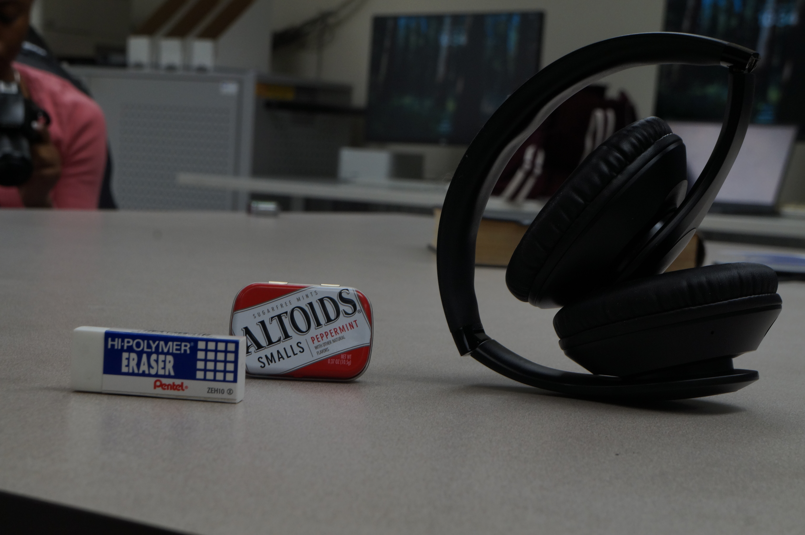

Camera Setting: f/5.6, 1/500s, ISO 400. Subject of the photo is sharp and the background is blurred.

Camera Settings: f/13, 1/250s, ISO 400. Both foreground and background appear sharp.
For this assignment, i have posted 4 JPG images in total in this page consisting: A shallow depth of field photo, a deep depth of field photo, a Photoshop blur version, and finally a original image used in comparison to the Photoshop Blur image.
| Shallow DoF | Deep DoF |
|---|---|
|
 Camera Setting: f/5.6, 1/500s, ISO 400. Subject of the photo is sharp and the background is blurred. |
Camera Settings: f/13, 1/250s, ISO 400. Both foreground and background appear sharp. |
| Photoshop Blur (Blur Gallery) | Original |
|---|---|
|
 I used Selection Tool, Filter > Blur > Field Blur to blur the background while keeping the subject sharp. |
 This the original image befpore applying the Blur Gallery filer. |
During last week’s class, I used the canon DSLR camera in learning how to capture camera details when photoshopping on Adobe Photoshop. I was trying to photograph the image by making one shallow and other deep, contrasting the two images from the lighting and features portions within each shoot. After observing the different features of photography, I learned that the lower the f-stop/aperture is the lighter it becomes and how darker it becomes when it increases. Also when you increase the f-stop at around f/11 or f/13, not only the camera gets darker, but also the filter of the camera changes. When you increase the aperture, the image becomes deeper, making both the foreground and background sharp. However, when you decrease the f-stop of the photo when photographing, the image will get lighter, but the subject will be sharp, leaving the background blurry. In addition to creating Homework3.html, I also created a Photoshop blur version of an original that I photographed. Before I used photoshop, I first used the Camera Raw filter by adjusting the contrast of the original image, making it have a little more exposure and light. After using Camera Raw, then I open in Photoshop, using a selection tool in separating the foreground from the background. Then, I select the Filter section on the top center section, pressing blur, then gaussian blur as my field blur. Even though it was hard blurring the background without blurring the foreground, I had fun learning it.